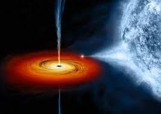

Selecciona un elemento del universo para aprender más
El Sol
Descubre el corazón de nuestro sistema solar: su energía, estructura y misterios.

Mercurio
El planeta más cercano al Sol, con temperaturas extremas y superficie llena de cráteres.

Venus
Similar en tamaño a la Tierra pero con una atmósfera infernal y temperaturas extremas.

Tierra
El único planeta conocido con vida, lleno de agua, biodiversidad y movimiento geológico.
Marte
El planeta rojo: hogar del Olympus Mons y clave en la búsqueda de vida pasada.

Júpiter
El gigante gaseoso con la Gran Mancha Roja y más de 90 lunas impresionantes.

Saturno
Famoso por sus majestuosos anillos, Saturno es un gigante con más de 140 lunas.

Urano
Un planeta helado que gira de lado, con temperaturas extremas y un descubrimiento histórico.
Neptuno
El gigante azul con los vientos más rápidos y el clima más extremo del sistema solar.
Luna
El satélite natural que influye en las mareas y la exploración espacial.
Galaxias
Enormes agrupaciones de estrellas y materia oscura, las verdaderas ciudades del cosmos.
Agujeros Negros
Regiones con gravedad extrema donde ni la luz puede escapar.